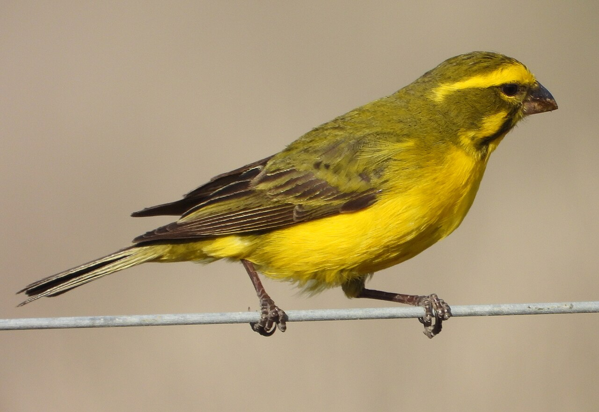
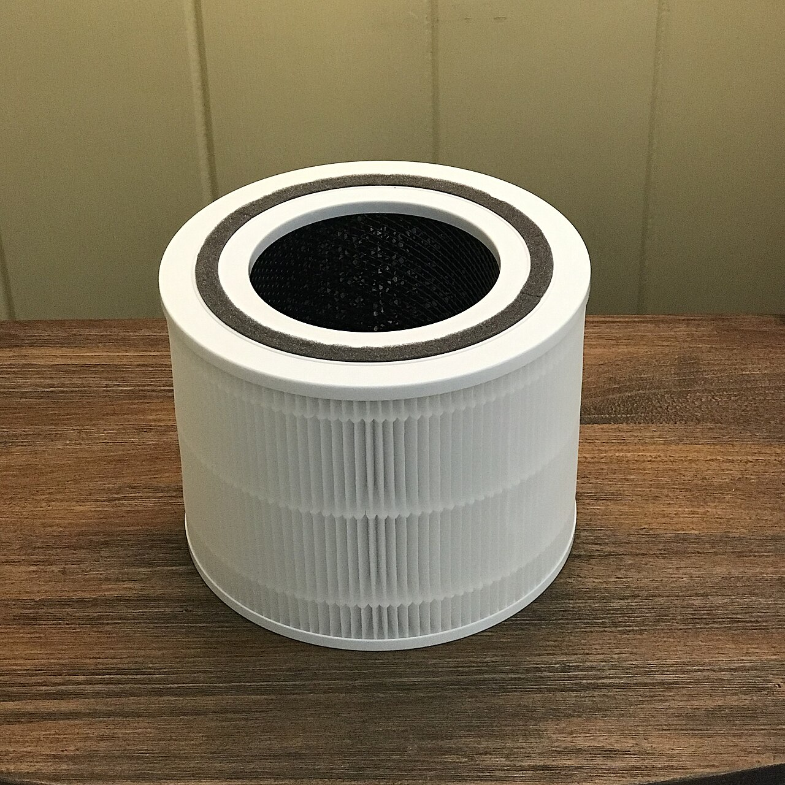

Neuroscience-led · Early feasibility project
Near-Nose Sensing for Harmful Air Exposure
A neuroscience-led platform for filtering and reading the chemical air people actually breathe.
Dirty air is not only an environmental background. It enters through the nose and lungs, and it may affect respiratory health, immune function, development, learning, affect, and long-term brain health. This project asks whether we can measure exposure closer to the body, and whether olfaction can be used as a way to study how chemical signals become biological state and action.
Named for the bird that once warned miners of air no one could see. The first claim here is just as plain: dirty air is a major biological exposure, and we usually measure it too far from the body.

Personal air sentinels
Two connected sides
Side one · Enquiry
Olfaction is a nervous-system interface. The nose samples volatile signals from the environment and from bodies, and the brain turns those signals into internal state, prediction, and action.
These signals may carry information about threat, safety, food, inflammation, disease, stress, affect, and social state. The question I care about is how a chemical signal at the nose becomes neural meaning and then behaviour, and whether some of that signal reports on hidden biological state before it shows up as symptoms.
Side two · Platform
The prototype is a near-nose system that filters pollutants and reads VOCs, gases, particulate patterns, humidity, temperature, and airflow. It places sensing close to the breathing zone rather than across the room.
It compares near-nose air with room-level air and with the readout from a consumer air purifier. It is a sensing and filtration platform, not a diagnostic device, and it does not deliver or generate odours.
What the research informs
The near-nose platform is the applied edge of a wider enquiry into olfaction as a hidden-state interface. The same sensing logic reaches across three domains. Dirty air is where Canary Labs starts, because it is urgent, measurable, and testable today.
Domain one
Animals often signal distress, illness, fear, pain, and social stress chemically before any of it is visible in behaviour. Reading those signals could flag poor welfare early, without restraint, blood tests, implants, or invasive monitoring, across shelters, veterinary care, farms, transport, sanctuaries, and labs. Here the sensing layer is the value, not the filter. The strongest claim is early detection of suffering before it becomes obvious.
Domain two
Most AI learns from visible behaviour, text, images, and reward, while missing hidden internal state. Embodied AI senses vision and sound far better than airborne chemistry. Olfactory sensing could add a missing state channel for stress, threat, uncertainty, contamination, smoke, decay, illness, and environmental danger, so systems model context rather than only predicting surface behaviour. The claim is a new sensory channel for safer embodied AI, not a solution to AI safety.
Domain three · we start here
Dirty air is a major global exposure, and most monitoring happens too far from the body to show what a person actually breathes at the nose. A near-nose platform measures personal exposure more accurately, and the filter can reduce it rather than only record it. First beneficiaries include children in polluted cities, commuters, and workers exposed to dust, smoke, fumes, mould, pollen, or combustion products.
A city under haze. Most of what people breathe is invisible at the point it enters the body.
The first test case
Polluted air is a strong place to start because it is urgent, measurable, and biologically meaningful. The exposures are real and continuous, and sensors can read parts of them today without sampling any tissue.
Deaths a year are attributed to air pollution worldwide. It is one of the largest environmental contributors to ill health, and most of it is invisible at the point where people breathe it.
State of Global Air 2024 · HEI / IHME / UNICEF
The chemical air people breathe is a mix of contributors, and a near-nose reading is meant to capture the part that actually reaches a person:
These exposures may matter for respiratory disease, asthma, and other inflammatory conditions. They could also matter for child development, learning, and attention, and a growing body of work tests whether they contribute to long-term brain health. I treat these as open questions the work might inform, not as effects this device measures.
On a platform, the air at the nose can differ sharply from the room average.
The measurement gap
Air quality is usually reported at the room, street, or city level. That is useful for policy and for averages, but the biological question is what reaches the breathing zone. A child near traffic, a worker near fumes, or someone in a smoky room can have a very different exposure from the room average, and that difference is exactly the air that reaches the nose and lungs.
≈ 2–5 m away
Reports what the room sees. A spatial average that smooths over local sources and the air closest to a person.
at the device intake
Reports what the purifier sees at its own intake. Tuned to show the device working, not to describe a person's exposure.
≈ 5–15 cm from the nose
Aims at what the person actually breathes, in the breathing zone, where the biologically relevant dose is set.
Prototype concept
A small near-nose unit draws breathing-zone air across a layered filter and a set of sensors, corrects the readings for humidity and temperature, and logs the result alongside readings from a room sensor and an air purifier. The schematic shows the air path and the data path.
Filtration detail
Each layer targets a different fraction so the sensors downstream still see a usable flow. The aim is enough capture to compare a filtered against an unfiltered reading, not a sealed mask.

The neuroscience side
What makes smell unusual is its wiring. Most senses are relayed through the thalamus before they reach awareness. Olfaction has a faster, more direct route into limbic structures, which is part of why an odour can shift affect before it is consciously named. Reading the chemical air is a way to study that mapping.
On the research side, the longer aim is a model that takes the chemical reading together with simple context, such as scene and stated intent, and infers a person's likely state. That is a way to ask how much of affect and arousal is predictable from the air at the nose. It stays on the reading side of the problem. No odour is delivered, and no clinical state is diagnosed.
Experiment one
The first experiment places the three sensor positions side by side under safe indoor-air conditions and asks whether the near-nose reading differs from the room and purifier readings, and whether those differences track what people report.
No deliberate exposure. The pilot does not expose people to harmful air on purpose. It tests the device under safe indoor-air conditions and compares readings across sensor positions. Any difference between filtered and unfiltered conditions comes from ordinary indoor air, not from introduced pollutants.
Use-case selection
The matrix scores candidate directions on the factors that decide whether a use case is worth starting with. Scores are qualitative and provisional, meant to order the options rather than grade them precisely.
| Use case | Health burden |
Evidence strength |
Ease of measurement |
Time to signal |
Need for near-nose |
Ethical feasibility |
Deployment pull |
|---|---|---|---|---|---|---|---|
| Occupational exposure | High | Medium | High | High | High | High | High |
| Inner-city childhood exposure | High | Medium | Low | Low | High | Low | Medium |
| Asthma & inflammatory conditions | High | Medium | Medium | Medium | High | Medium | Medium |
| Neurodegenerative risk | High | Low | Low | Low | Medium | Low | Unknown |
| Preventive brain health clinics | Medium | Low | Medium | Low | Medium | Medium | Unknown |
| Consumer indoor air quality | Medium | Medium | High | High | Medium | High | High |
The strongest first use cases are likely occupational exposure or consumer indoor air quality, because they allow faster measurement without making disease claims. Childhood exposure and neurodegenerative risk may be higher-impact long-term directions, but they need more careful study and stronger partners.
Sources
Air pollution and brain health
Air pollution and the body
Personal exposure and low-cost sensing
Olfaction as a neural interface
Volatile signals and early biological change
Disease-related changes in volatile signatures